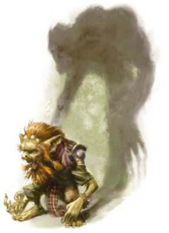

小型精类（可巨化为大型精类）

| 自然形态 | 巨化形态 | |
| 体型与类型 | 小型精类 | 大型精类 |
| 生命骰 | 5d6+5（22点生命值） | 5d6+20（37点生命值） |
| 先攻 | 9 | 7 |
| 速度 | 20英尺 | 30英尺 |
| 防御等级 | 19（+1体型，+4敏捷，+4链甲衫），接触15，措手不及15 | 16（-1体型，+3敏捷，+4链甲衫），接触12，措手不及13 |
| 基本攻击／擒抱 | -1 | 0.2 |
| 攻击 | 短剑+6近战 | 短剑+6近战 |
| 全力攻击 | 短剑+6近战 | 短剑+6近战 |
| 伤害 | 短剑1d6 | 短剑1d8+6 |
| 面宽／触及 | 5英尺/5英尺 | 10英尺/10英尺 |
| 特殊攻击 | 偷袭+3d6，类法术能力 | ― |
| 特殊能力 | 昏暗视觉，体型变化 | 昏暗视觉，体型变化 |
| 豁免 | 强韧+2，反射+9，意志+3 | 强韧+5，反射+7，意志+3 |
| 属性 | 力量10，敏捷20，体质12，智力11，感知9，魅力11 | 力量18，敏捷16，体质18，智力11，感知9，魅力11 |
| 技能 | 攀爬+5，解除装置+7，躲藏+14，聆听+6，潜行+10，开锁+12，手上功夫+10 | 攀爬+9，解除装置+4，躲藏+4，聆听+6，潜行+8，开锁+10，手上功夫+8 |
| 专长 | 精通先攻，武器娴熟（短剑） | 精通先攻，武器娴熟（短剑） |
| 地域 | 任意森林 | 任意森林 |
| 组织 | 单独或成群（3-12只） | 单独或成群（3-12只） |
| 挑战等级 | 3 | 3 |
| 宝物 | 标准 | 标准 |
| 阵营 | 通常混乱（任意） | 通常混乱（任意） |
| 进化 | 按职业等级 | 按职业等级 |
| 等级调整 | 2 | 2 |
荆棘怪是邪恶的游牧类侏儒生物，拥有可随意巨化的奇特能力。它们成群结队穿行于林地，偶尔会潜入城镇村庄。荆棘怪以旅途中的抢劫掠夺为生。虽数量众多，但因缺乏组织能力而对文明种族威胁有限。
荆棘怪形貌丑陋猥琐，油腻的红褐色毛发配暗黄色皮肤，以夸张发型为傲――蓄着浓密八字胡、络腮胡与马尾辫。它们污秽不堪，散发近似腐肉的恶臭。
荆棘怪使用侏儒语与通用语，少数会费心学习木族语与狗头人语。
荆棘怪善用震慑战术，先以小型体态包围对手，临战时骤然巨化，藉此获得借机攻击距离优势。更敏捷的个体则藏身暗处策应，通过偷袭、潜行盗窃或碎裂术干扰敌人。
荆棘怪可通过“召唤自然盟友IV”法术召唤。
偷袭（Ex）：当目标失去敏捷加值或被荆棘怪夹击时，其近战命中可额外造成3d6点伤害，此伤害可与游荡者等级等来源的偷袭伤害叠加。
类法术能力：随意施展――燃火术、恐吓术、粉碎音波。施法者等级8级；豁免DC为10+法术等级。
体型变化（Size Change）（Su）：荆棘怪可自由变换体型，效果类似于变巨术。从小型变为大型时，力量+8、敏捷-4、体质+6，攻击加值与防御等级-2。巨化时短剑具大型武器属性，但无法偷袭或使用类法术能力。
技能：荆棘怪在攀爬、解除装置、潜行、开锁及手上功夫检定上具有+4种族加值。
这群喧闹卑劣的精类生物总在遭当地居民驱逐前短暂盘踞某地。通常栖身林间阴暗地穴或被遗忘的废墟，以盗窃谋杀为生，劫掠恐吓靠近巢穴者。绝境时团伙解散，个别会伪装成侏儒混入城镇。荆棘怪极度痴迷武器护甲，多以非法手段获取。
荆棘怪偏好职业为游荡者。因特殊能力，其有效角色等级（ECL）为职业等级+7。故1级荆棘怪游荡者的ECL为8，相当于8级角色。